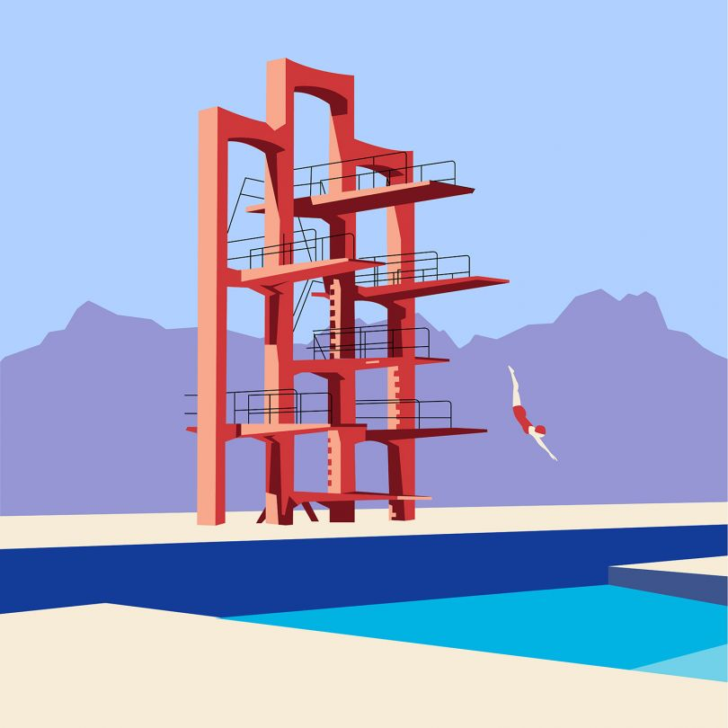

<div> izmanto, lai izveidotu sadalījumu, sekciju vai atsevišķu daļu.
To var arī izmantot kā konteineri, kurā var ievietot HTML elementus, kā arī tos rediģēt.
Lietojams ne tikai HTML kodā, bet arī CSS kodā.
<span>
The <span> izmanto, lai rediģētu
kādu daļu no teksta
<mark>
izmanto, lai
izceltu
tekstu vai arī kādu daļu no
teksta.
CSS
Attēlu invertēšana un spoguļošana.

Izmantojot CSS, var invertēt attēlus, kā arī spoguļot attēlu.
Un iznākums redzams tikai, kad kursors atrodas uz paša attēla.
Šo var izmēģināt uz augstāk esošā attēla!!